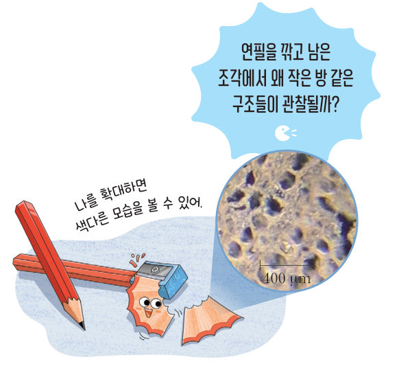
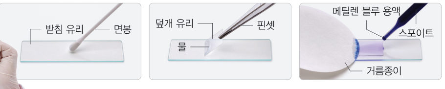
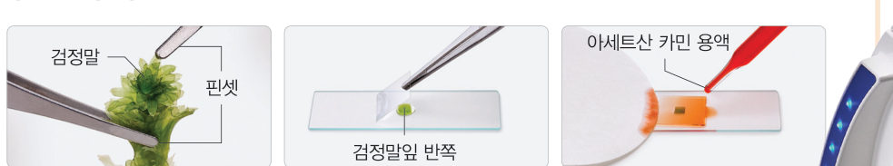
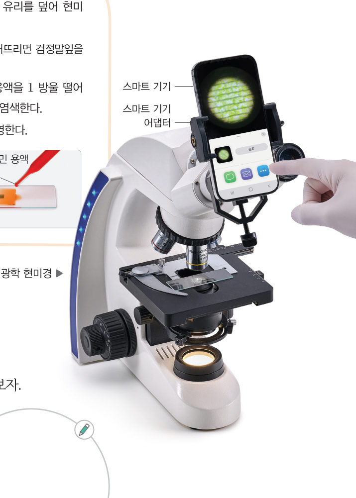
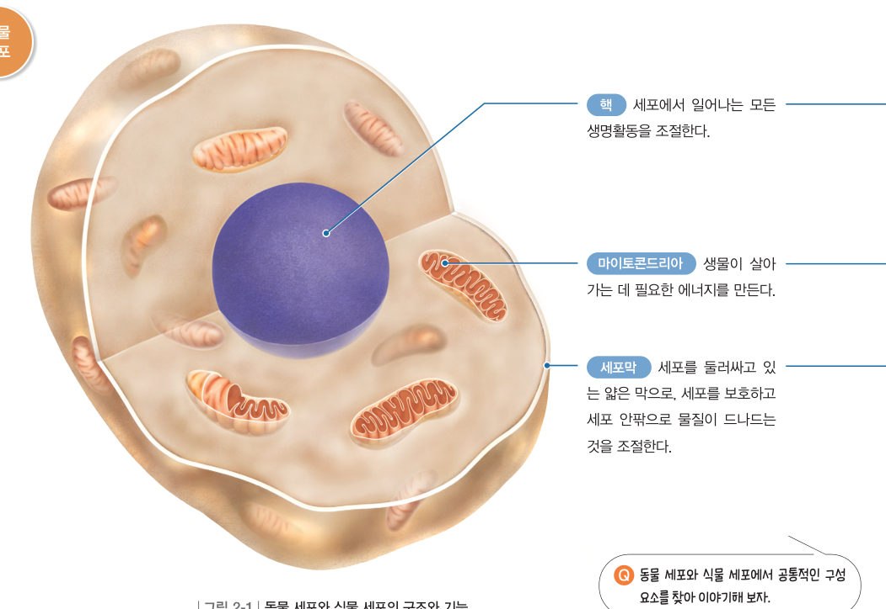
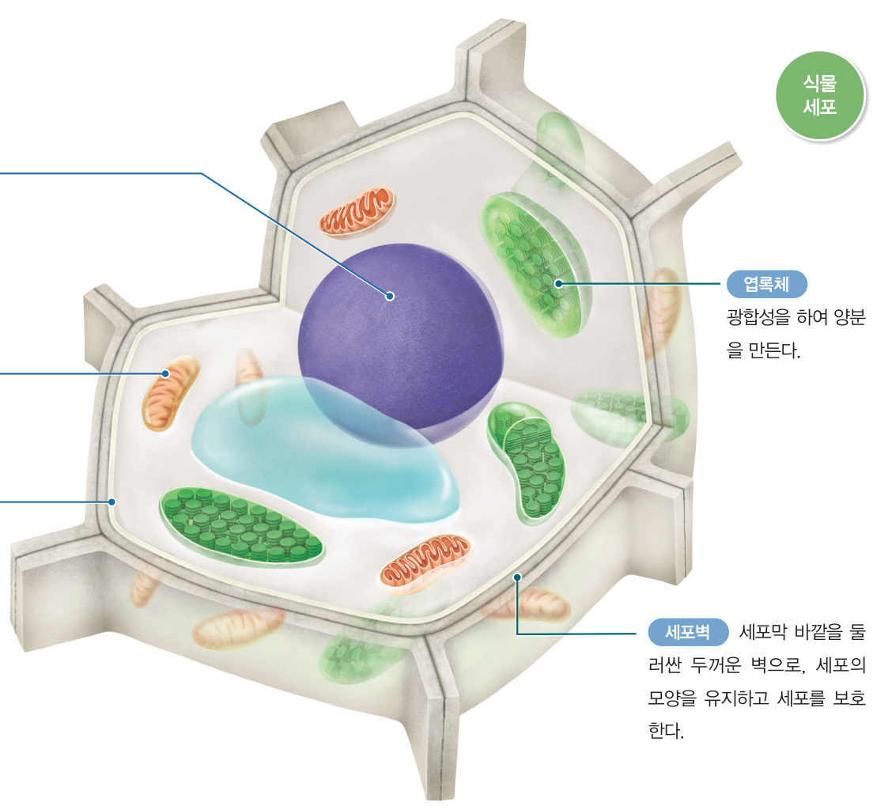
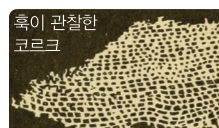
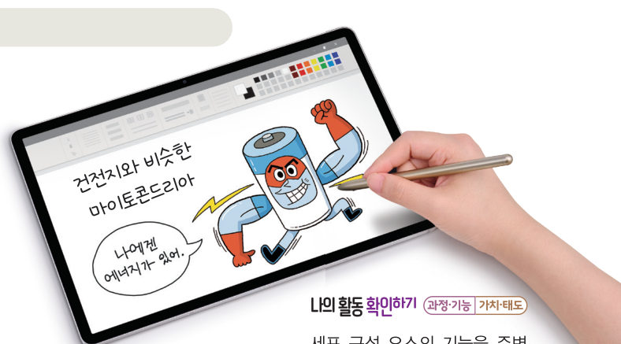

생명활동이 일어나는
기본 단위
“나를 확대하면 색다른 모습을 볼 수 있어.” 연필을 깎고 남은 조각에서 왜 작은 방 같은 구조들이 관찰될까? 가상 현미경으로 입안 상피세포와 검정말잎 세포를 관찰하고, 3D 세포 속을 돌아다니며 세포 구성 요소의 기능을 알아보자.
이 바다에는 다양한 산호로 이루어진 산호 군락이 넓게 펼쳐져 있어. 산호가 사는 곳에서는 여러 종류의 물고기도 살아. 산호와 물고기들은 생김새나 생활 방식이 다르지만 몸이 이루어진 방식에는 비슷한 점이 있대.
생명활동의 기본 단위는 무엇일까?
연필의 재료인 나무를 비롯해 모든 생물은 세포로 이루어져 있다. 또한 먹고, 숨을 쉬며, 움직이는 것과 같이 생물의 다양한 생명활동은 세포에서 시작된다. 즉 세포는 생물을 이루는 구조적 기본 단위이자 생명활동이 일어나는 기능적 기본 단위이다.



더 해 보기 · 다양한 세포 관찰하기
근육세포, 달개비 잎 표피세포 등 다양한 세포의 표본을 현미경으로 관찰하고, 각각의 세포를 비교하여 공통점과 차이점을 이야기해 보자.
세포는 그림 2-1과 같이 막으로 둘러싸여 있고, 여러 ●세포소기관으로 이루어져 있다. 동물 세포와 식물 세포에는 모두 핵, 마이토콘드리아, 세포막이 있다. 또한 식물 세포에는 동물 세포와 달리 엽록체와 세포벽이 있다. 이러한 세포 구성 요소는 각각 고유한 기능을 수행한다.
세포는 여러 세포 구성 요소의 기능에 따라 생명활동을 수행하고, 이는 생물의 생명활동으로 연결된다. 마이토콘드리아에서 만들어진 에너지는 동물이 움직이거나 식물이 싹을 틔우는 데 쓰인다. 또한 엽록체에서 광합성 결과 만들어진 양분은 열매에 저장되거나 식물이 에너지를 얻는 데 쓰인다.


| 구성 요소 | 하는 일 | 동물 세포 | 식물 세포 |
|---|---|---|---|
| 핵 | ○ | ○ | |
| 마이토콘드리아 | ○ | ○ | |
| 엽록체 | ○ | ||
| 세포막 | ○ | ○ | |
| 세포벽 | ○ |


- 세포 구성 요소 중 하나를 정하고, 그 기능을 주변 사물의 기능에 비유하여 스마트 기기에 그림으로 표현한다.
- 그림을 공유 플랫폼에 올려 친구들과 공유한다.
| 발전소·건전지 | |
| 학교의 교문과 경비실 | |
| 모든 일을 지시하는 교장실 | |
| 햇빛으로 음식을 만드는 공장 | |
| 성을 둘러싼 튼튼한 성벽 |
세포에 대한 설명으로 옳지 않은 것은?
| ⑤ 광합성을 하여 양분을 만든다. | |
| ⑥ 세포를 보호하고 세포 안팎으로 물질의 출입을 조절한다. | |
| ⑦ 생물이 살아가는 데 필요한 에너지를 만든다. | |
| ⑧ 세포에서 일어나는 모든 생명활동을 조절한다. | |
| ⑨ 세포막 바깥을 둘러싼 두꺼운 벽이다. |
1세포
· 핵: 생명활동 조절 · : 에너지 생성 · : 광합성을 하여 양분 생성
· 세포막: · 세포벽: 세포 모양 유지, 세포 보호